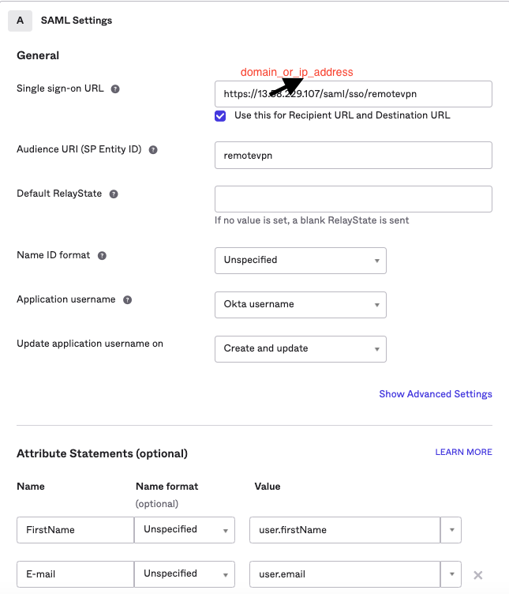
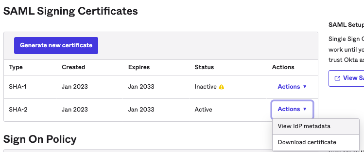
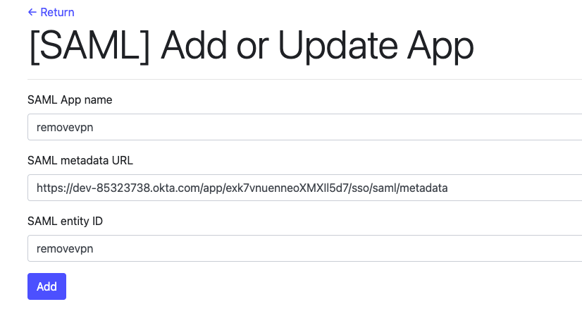

Applications --> Create a new app integration --> SAML 2.0
App Name:remotevpn (or any other App name)
Single sign-on URL: https://domain_or_ip_address_of_esun_vpc_edge/saml/sso/remotevpn
Audience URI (SP Entity ID):remotevpn (or any)
Attribute Statements (optional):
FirstName: user.firstName
E-mail: user.email
Applications --> Application --> Your App (remotevpn) --> Sign On --> SAML Signing Certificates
SHA-2 --> Actions --> view IDP metadata
Click the url
Okta/SAML Remote User VPN --> Add or Update App -->
SHA-2 --> Actions --> view IDP metadata
SAML App name: remotevpn (or any other App name)
SAML metadata URL: URL from "Get SAML metadata in OKTA"
SAML App name: remotevpn (or any)
